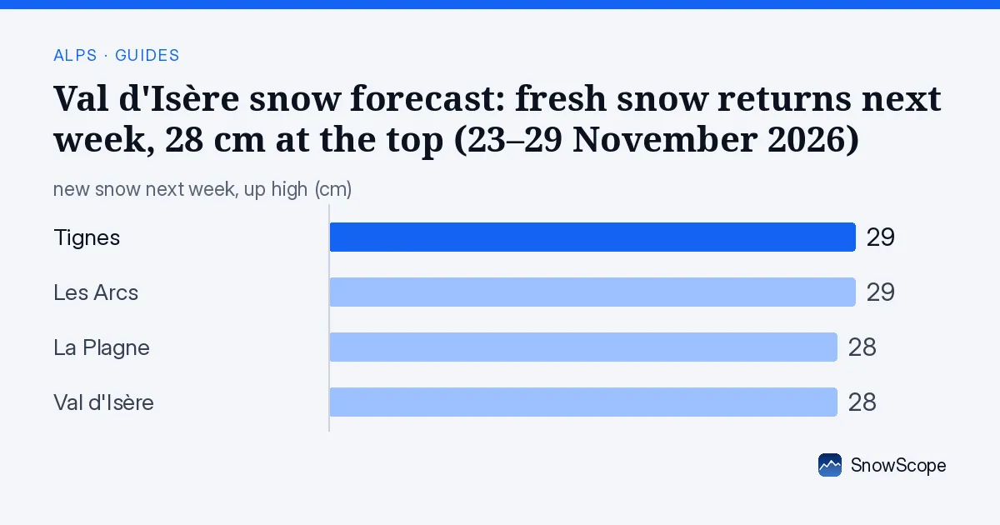
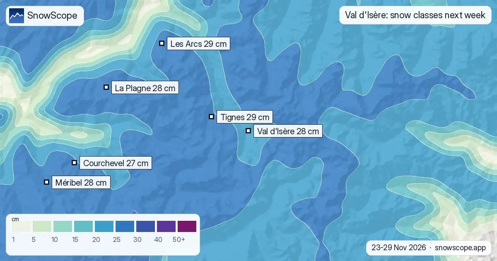
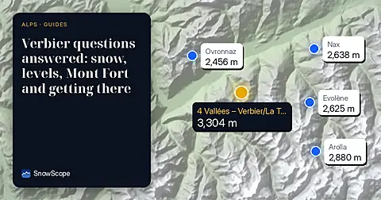

Val d'Isère snow forecast: fresh snow returns next week, 28 cm at the top (23–29 November 2026)
The question for anyone heading to Val d'Isère next week is simple: how much, and where? Between Monday 23 and Sunday 29 November our forecast puts 28 cm on the upper slopes (10–46 cm), 26 cm around 2600 m and 24 cm at the base, with Thursday 26 November as the snowiest day.
See the live snow forecast for Val d'Isère in the SnowScope appSnow depth, powder alerts and the 3D map, free.
How the week of 23–29 November adds up in Val d'Isère
At the top (around 3200 m) the week totals 28 cm, 10–46 cm across our range. Mid-mountain around 2600 m gets 26 cm (9–42 cm), and the base around 1900 m 24 cm (9–38 cm).
Most of the total arrives on Wednesday 25 (6 cm, up to 6), Thursday 26 (10 cm, up to 16) and Sunday 29 (6 cm, up to 12), counted at the top as the middle of our forecast and the high case.

Picking your day in Val d'Isère
If you can pick one day, take the one that follows Thursday 26 November, when 10 cm (up to 16 cm) has landed on the upper mountain.
The snow lies best on the Pissaillas glacier and the tops of Solaise and Bellevarde. For the softest turns, look to Bellevarde's shaded east and north flanks above La Daille. Lower down, the long home runs down to La Daille and the village will be the first to suffer if the air turns mild.
Snow or rain at the bottom?
The base gets nearly as much as the top (24 against 28 cm), which means the snow line stays below the lowest lifts for most of the week. Snow down to the village is the likely picture.
Val d'Isère shares the Espace Killy with Tignes, so a thin day on one side can be saved by crossing over.
Val d'Isère against its neighbours
At the top, next week, our forecast gives Tignes (6 km away) 29 cm, Les Arcs (19 km away) 29 cm and La Plagne (23 km away) 28 cm, against 28 cm here.
Nothing to separate them on snow alone; the choice comes down to the terrain you want.
First, this week's snow
Before next week even starts, Val d'Isère should be holding a deep fresh layer up high: 83 cm from Tuesday 17 to Friday 20 November (67–99 cm), while the base sees 46 cm. The second storm then builds on it.
Confidence, in plain words
The range is wide: 10 cm in the low case, 46 cm in the high one. That is normal a week ahead. The timing is more reliable than the total.
The days closest to now are the most reliable; the end of the week is the least.
Tips for skiers
- Fresh snow on a young snowpack: read the French avalanche bulletin (BERA) for the massif before any off-piste plan.
- Check the resort's own opening date and lift status: snow on the mountain does not mean lifts are running.
- Watch the forecast midweek: the top's range is 10–46 cm.
More maps (external sites)
About these numbers
Snow numbers: our two-week snow forecast issued on 16 November 2026, read at three heights of the resort (top, mid-mountain, base). Each total is the middle of a range, with a low and a high case. These are estimates for the slopes, not resort measurements, and forecasts move from day to day: check the live map before you go.
Cite this report
For research, teaching or the press: the numbers and charts are free to reuse under CC BY 4.0 with this citation.
SnowScope (2026), Val d'Isère snow forecast: fresh snow returns next week, 28 cm at the top (23–29 November 2026), https://snowscope.app/blog/en/2026/11/val-disere-powder-forecast-next-week-23-29-november-2026.html, accessed 2026-11-16
SnowScope (Atlas Labs). (2026, November 16). Val d'Isère snow forecast: fresh snow returns next week, 28 cm at the top (23–29 November 2026). SnowScope snow reports. https://snowscope.app/blog/en/2026/11/val-disere-powder-forecast-next-week-23-29-november-2026.html
BibTeX
@misc{snowscope2026valdiserepowderforecastn,
author = {{SnowScope (Atlas Labs)}},
title = {Val d'Isère snow forecast: fresh snow returns next week, 28 cm at the top (23–29 November 2026)},
year = {2026},
month = nov,
howpublished = {\url{https://snowscope.app/blog/en/2026/11/val-disere-powder-forecast-next-week-23-29-november-2026.html}},
note = {Published 2026-11-16 11:16 UTC; accessed 2026-11-16}
}· CC BY 4.0 · Methods, data and tools →
Val d'Isère: snow and temperature by height, this winter vs last (tools) →
Follow Val d'Isère
Free: a message when fresh snow is coming, and the forecast every morning.
More snow reports

Is Verbier good for beginners? When is the snow best? How do you get there? Answers from the 4 Vallées and 46 past winters of snow data.

Ski the 131 km of runs in the Forêt Blanche this December with a six-day pass for 298 EUR.

Valloire-Valmeinier offers 131 km of runs and a 98 % chance of 30 cm of snow at mid-mountain by mid-December.